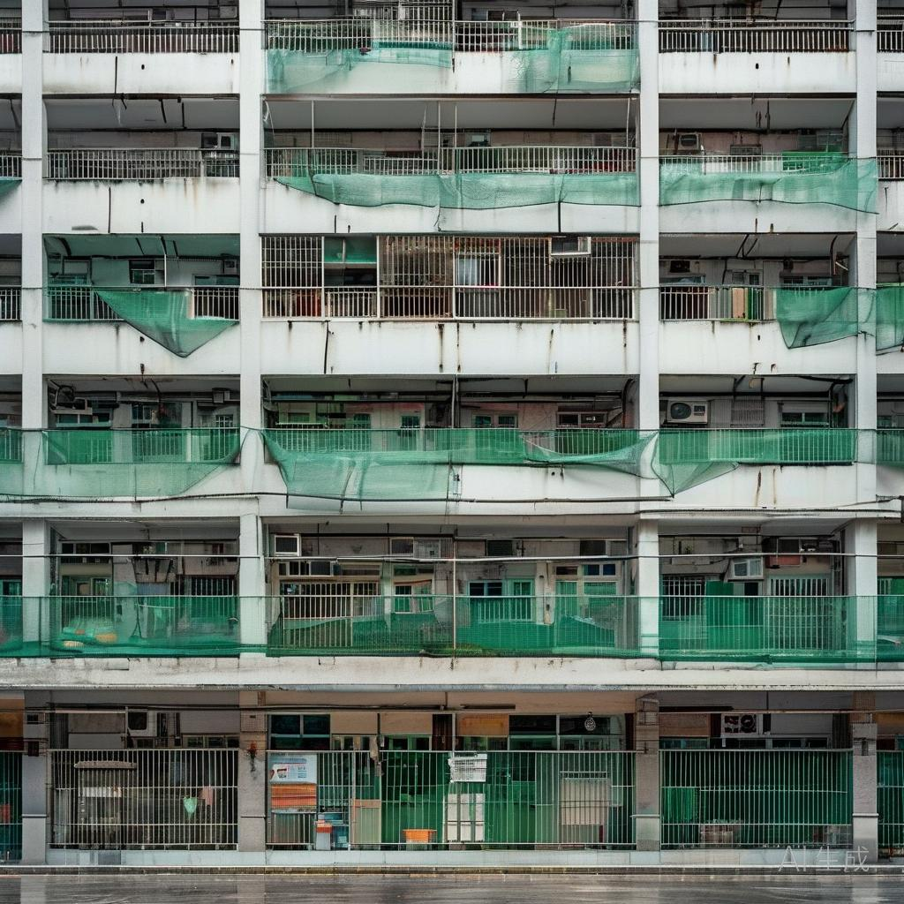
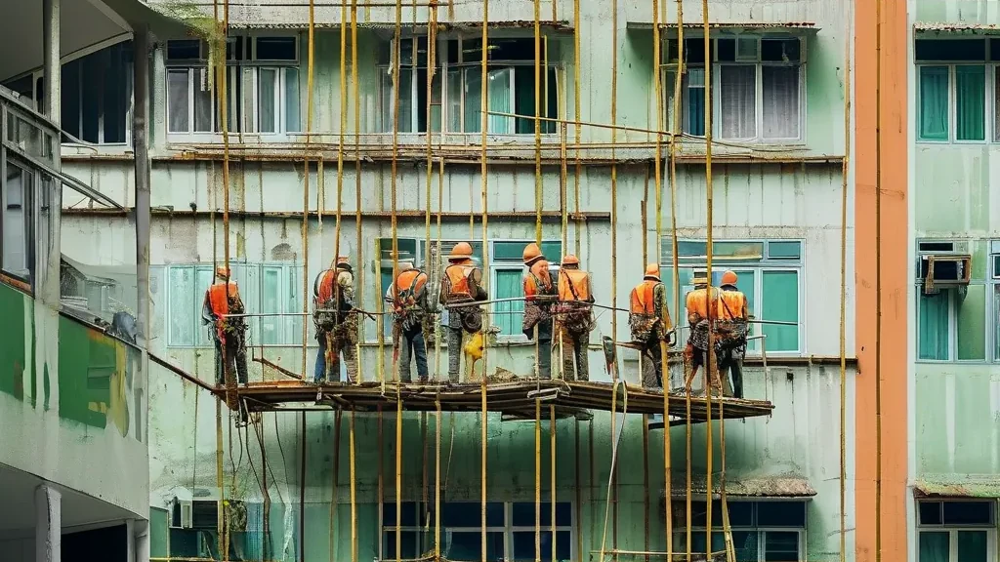
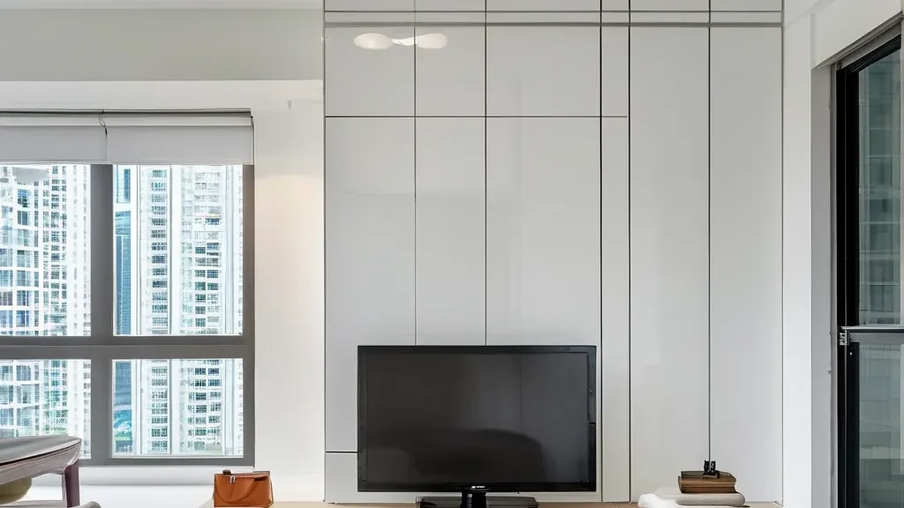

圍標刑事化：張丹楓教長沙灣420呎業主睇報價單三個破綻

📍 場景：長沙灣舊樓 420 呎兩房｜主訪：昌哥（28 年泥水）｜記錄：張丹楓｜整理：雲蕾｜日期：2026 年 11 月 23 日｜WhatsApp 報價：852 5190 2328
序幕：三張報價單，同一個數字
林太是那種做足功課的業主。長沙灣一幢 1978 年落成的舊樓，420 呎兩房，她七月收樓，八月開始搵人報價。三間公司，三個禮拜內先後上門度尺，每一間她都親自招呼，每份圖講足四十分鐘。
三份報價單攤在茶几上，總數是 $36,800、$37,500、$36,800。頭尾相差七百蚊。她指住「清拆及清運」那一行給我看，三間公司用的字眼一模一樣：「一式」。
她第一句話不是問價錢，是問：「張生，係咪我唔識睇，所以佢哋覺得我唔會問？」
這句話，一年聽幾十次。
第一幕：圍標唔止發生在大廈外牆
2026 年 11 月 21 日，商務及經濟發展局局長在電視節目講到樓宇維修圍標。他的說法很清楚：大廈維修工程圍標問題嚴重，需要立即針對性提出修例，政府計劃將圍標行為刑事化。同一日的新聞亦提到，大律師公會要求釐清《競爭條例》寬待機制及「吹哨者」豁免，在刑事檢控下是否仍然適用；局方回應不排除加入考慮，但要視乎律政司意見。
這單新聞講的是大廈大維修：外牆、棚架、天台防水、消防裝置，每戶夾幾萬到十幾萬。很多業主覺得「我唔係法團，唔關我事」。但在工地做了八年，我見過的夾價手法，跟一間 420 呎單位裡的裝修報價，是同一套劇本。
分別只是規模。大廈圍標，幾間承建商夾好報價，輪流中標；私人單位夾價，幾間公司互相打招呼，價錢壓在同一個水平，最後一間「平七百蚊」中標，令業主覺得自己揀得精明。
「咁即係我而家三份都唔可信？」
「唔係全部唔可信。但你手上呢三份，冇一份講得出『打鑿幾多平方、清走幾多車泥頭』。呢個唔係你唔識睇，係佢哋唔想你睇。」
第二幕：昌哥拆三個破綻
我請昌哥上樓。他做了 28 年泥水，紅磡、觀塘、深水埗的舊樓幾乎都踩過。他坐下來，先不看總數，由第一頁開始用手指逐行點。
「你睇呢行：『全屋打鑿及清運，一式 $8,000』。一式即係幾多？打幾深？打幾多平方？泥頭幾多車？我打過 420 呎單位，淨係廚房廁所磚連地台，都出三車泥頭。三車同五車，價錢差千幾蚊。」
破綻一：分項加唔埋總數。把三份報價單的每一行加起來，再對總數。三份之中有兩份對唔上，差額分別是 $1,200 和 $900。一間正經公司，報價單是逐項計出來的，加得埋；加唔埋，通常代表總數是先寫好，再倒轉填分項。
破綻二：全部寫「一式」、「包工包料」。正經的寫法要有數量、單價、工序、物料牌子型號。例如泥水批盪，厚度 15 至 20mm，2 米範圍內誤差唔應該超過 3mm；防水要做兩層，企缸試水 48 小時、其他位置 24 小時；木工龍骨每 30cm 一支，板材用 18mm 的 E0 多層實木夾板。這幾樣寫得出來，才有得比較。
破綻三：三間公司的巧合。林太翻出電話記錄，三間公司都是同一個禮拜內、由同一個地產經紀介紹；其中兩間的報價單，字體、行距、連錯字都一樣，只是公司名不同。這種情況未必一定違法，但業主絕對有權問清楚：邊個寫這份報價？邊個落場做？
「我唔會話行家呃人，行內九成人係正經做。但你要記住：報價單寫得愈模糊，中標之後加錢嘅空間就愈大。」
第三幕：刑事化之後，業主手上有咩
政府將圍標刑事化，對業主最實際的意義，不是「終於有人拉人」，而是整個流程會被迫留下文件：標書要分項、開標要記錄、承建商資格要查。大維修是這樣，私人單位裝修遲早都會跟著走。
所以我們替林太重做一份「可以比較」的報價要求。四頁紙，沒有一個「一式」：
第一，工序分項：清拆、水電、泥水、木工、油漆、安裝，每項寫數量與單價。第二，物料寫明：18mm E0 多層實木夾板、304 不鏽鋼鉸鏈、防潮玻璃膠，唔好寫「靚料」。第三，付款分四期：開工 30%、水電完成 30%、油漆完成 30%、驗收後 10%。第四，寫清楚後加工程要業主書面確認才做。
林太最後揀了第四間公司，一間她自己在屋苑群組問回來的。報價 $36,800，比之前最便宜那份貴七百蚊，但多了一頁分項表，同一個寫明「泥頭四車、打鑿 42 平方米」的附註。
「你唔係買貴咗，你係買咗一份可以追嘅合約。」
整個 420 呎單位，連廚房廁所重做、全屋到頂衣櫃、電視櫃、高架地台，套餐落在 $35,000 至 $38,000 這個區間（故事報價，實際以度尺為準）。價錢不是重點，重點是每一蚊都寫得出對應哪一行工序。

尾聲：圍標最怕你問數
收工那日，林太把四份報價單釘在一起，放進一個公文袋。她說要留給女兒看，將來買樓裝修用。
我在樓下見到法團通告，大維修的招標日期還未定。圍標這種事，不怕你講價，最怕你問數。你問「一式即係幾多」，很多本來含糊的報價，會突然變得清楚；也有些公司，會突然不再回覆。
兩種結果，對業主都是好事。

❓ 樓宇維修圍標三問
Q1：政府將圍標刑事化，同我裝修自己間屋有咩關係？
刑事化針對的是樓宇維修工程的招標行為；私人單位的裝修工程本身仍然受《競爭條例》第一行為守則規管，合謀定價、瓜分市場都屬嚴重反競爭行為。對業主最直接的影響是：報價、標書、開標記錄都會愈來愈規範，你要求分項報價，是合理而且有依據的。具體條文與生效日期，以政府公布為準。
Q2：三間公司報價差不多，係咪一定係圍標？
不一定。同區、同類面積、同類工序的單位，報價接近很正常，差距 3% 至 5% 很常見。要判斷的是有冇得比較：如果三份都是「一式」、分項加唔埋總數、物料只寫「靚料」，那就算不是圍標，也是一份你無法驗收的合約。相反，寫明數量單價的報價，就算價錢接近，你都可以逐項問。
Q3：我可以點查一間承建商？
三個免費步驟。第一，公司註冊處查註冊編號、成立日期、董事名單，看幾間投標公司有無地址或董事重疊。第二，屋宇署名冊查它是否註冊一般建築承建商或相關級別小型工程承建商，大維修工程對資格有明確要求。第三，要求出示第三者責任保險及勞工保險證明，並在合約寫明施工期間的保障範圍。查不到、答不到的公司，直接跳過。
本文配圖均為 AI 場景示意圖，僅供場景參考，並非真實工地照片或業主影像。
想知你個單位裝修要幾錢？
📱 一鍵 WhatsApp 張丹楓